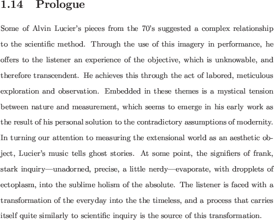
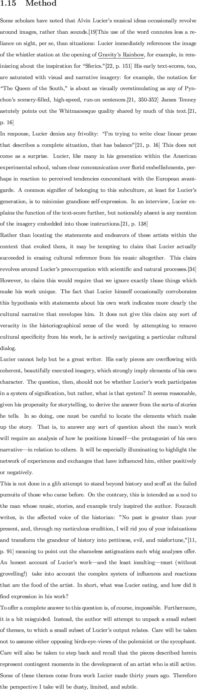
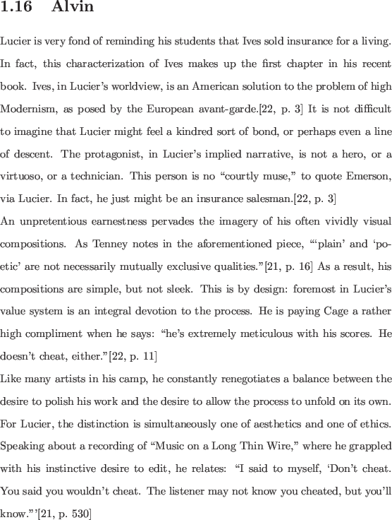
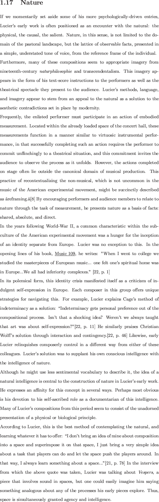

An especially attractive variant on the Laser Doppler Vibrometer, the Self-Mixing LDV, uses the laser cavity itself as the location of beam mixing. Therefore, no external mirrors are required. This technique strongly suggests the use of a diode laser, although it has been attempted in tube lasers as well.[12] Modern laser diodes frequently have a second pair of pins, which connect to the embedded photosensitive element.
While the self-mixing approach seems to work without any accoutrements besides the laser diode and an attenuator, the dynamic range in this configuration is poor. Thus, much of the research contributing to the design of these devices is dedicated to improving them in this respect.
Since this technique has been established for some time, some fairly sophisticated implementations exist in the literature. This technique looks very promising on all fronts.
Charles Curtis
Abstract:
A thread running through a number of Alvin Lucier's early works seems to be an urge to equate musical performance with an act of scientific observation, or measurement. With sound, room acoustics, and various corollaries of sound as the declared objects of this observation, Lucier seems to put musicians and listeners in a shared encounter with ``nature'' and ``the natural world'' that combines elements of science, mysticism and universalism. What are the sources of these notions of ``nature'' and art-making, and what is the context in post-World War II America that gives rise to this interest in measuring the behavior of sound as an aesthetic? What conclusions can be drawn from the language, methodologies and idea-world that Lucier makes use of?




Notes on the Scores
joe
2014-01-08